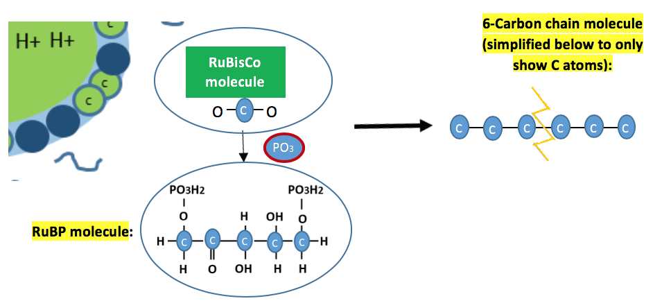

Here, we will break down the simplified description of photosynthesis (as summarized below) into its many (many!) steps.
There are small holes in the bottom of leaves, where gases like Co2 enter and O2 exit. Within the cells of leaf are little organs called chloroplasts.

Carbon dioxide and water molecules diffuse by randomly moving around. Some move into the tiny chloroplasts in the cells near the top part of the leaf.

Click below to hear explanation:
Click below to hear explanation:

Click below to hear explanation:
This section describes the CO2 + RuBP reaction in more detail...
Click below to hear explanation:

The 6-carbon molecules quickly split into two 3-Carbon molecules, forming new molecules called "PGals".

Click below to hear explanation:
Summary


***Note for Teachers: You can access more information about this website and find other resources for science inquiry on the ISP Tutor website.
©2021 Klahr Lab, Carnegie Mellon University. All Rights Reserved
Carnegie Mellon University | Dept. of Psychology | 5000 Forbes Ave. | Pittsburgh, PA 15213 The TED project was funded in part by the Institute of Education Science (IES), Grant R305H060034, and in part by the National Science Foundation, Grant SBE035442. The ISP Tutor project is funded by IES, Grant R305A170176.
The research reported here was supported by the Institute of Education Sciences, U.S. Department of Education, through Grant R305A170176 to Carnegie Mellon University. The opinions expressed are those of the authors and do not represent views of the Institute or the U.S. Department of Education.